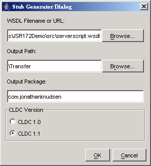

|
|
The J2ME Wireless Toolkit emulator supports JSR 172, the J2ME Web Services Specification. JSR 172 provides APIs for accessing web services from J2ME applications. It also includes an API for parsing XML documents.
The J2ME Wireless Toolkit provides a stub generator that automates creating source code for accessing web services. To get to the stub generator, choose File > Utilities... from the KToolbar menu. Click on Stub Generator.

The WSDL Filename or URL should point to the WSDL file for the web service you want to access. The Output Path indicates the location where you want the stub files to be placed. Output Package indicates the Java language package name for the stub files. Finally, choose whether you want to generate CLDC 1.0 or CLDC 1.1 stubs.
Press OK to generate the stub files.
|
|
J2ME Wireless Toolkit User's Guide J2ME Wireless Toolkit 2.2 |
Copyright © 2004 Sun Microsystems, Inc. All rights reserved. Use is subject to the license terms.